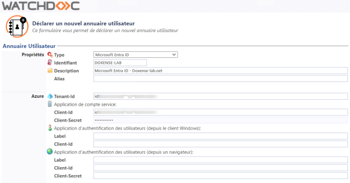
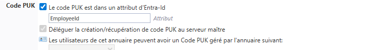

Configurer
Section Propriétés
Dans la section Propriétés,
-
Type : sélectionnez Microsoft Entra ID
-
Identifiant : indiquez le nom de l'annuaire tel que déclaré dans MS Entra ID
-
Description : saisissez une description précisant la nature ou l'objet de l'annuaire
-
Alias : si nécessaire, ajoutez un alias pour retrouver l'annuaire plus facilement qu'à l'aide de son identifiant.
Section Azure
Les informations saisies permettent d'établir la communication entre Watchdoc et l'annuaire :
-
Tenant-Id : indiquez ici l'identifiant de votre annuaire (Tenant - Locataire) Microsoft Azure.
-
Application de compte de service : saisissez les informations de connexion qui seront utilisées par le service Watchdoc.
-
Client-Id : indiquez ici l'identifiant de votre application client créée dans Microsoft Entra.
-
Client-Secret : indiquez ici la valeur du secret (mot de passe d'application) associé au Client-Id.
-
-
Application d'authentification des utilisateurs (depuis le Client Windows) : saisissez les informations de connexion qui seront utilisées par l'application Watchdoc Print Client for Windows.
-
Label : nom de l'application indiqué aux utilisateurs dans Watchdoc Print Client
-
Client-Id : indiquez ici l'identifiant de votre application cliente créée dans Microsoft Entra.
-
Application d'authentification des utilisateurs (depuis un navigateur): saisissez les informations de connexion qui seront utilisées par l'interface d'administration de Watchdoc :
-
Label : nom de l'application indiqué aux utilisateurs dans l'interface Watchdoc ;
-
Client-Id : indiquez ici l'identifiant de votre application cliente créée dans Microsoft Entra;
-
Client-Secret : indiquez ici la valeur du secret (mot de passe d'application) associé au Client-Id :

-
Section Code PUK
Les utilisateurs inscrits dans un annuaire Microsoft Entra ID peuvent s'authentifier dans Watchdoc à l'aide d'un Code PUK Puk = Print User Key.
Dans Watchdoc, il s'agit d'un code (associé à un compte utilisateur, mais utilisé seul) suffisant pour permettre à ce dernier de s'authentifier dans un WES.
Le code PUK est généré par un algorithme.
L'utilisateur peut le consulter dans la page "Mon compte" de Watchdoc.
Par souci de sécurité, nous déconseillons l'authentification par code PUK et recommandons l'utilisation du compte utilisateur (login)/code PIN.*.
Puk = Print User Key.
Dans Watchdoc, il s'agit d'un code (associé à un compte utilisateur, mais utilisé seul) suffisant pour permettre à ce dernier de s'authentifier dans un WES.
Le code PUK est généré par un algorithme.
L'utilisateur peut le consulter dans la page "Mon compte" de Watchdoc.
Par souci de sécurité, nous déconseillons l'authentification par code PUK et recommandons l'utilisation du compte utilisateur (login)/code PIN.*.
Ce code peut être :
-
soit présent dans un attribut de l'annuaire Microsoft Entra ID. Dans ce cas :
-
cochez la case Le code PUK est dans un attribut d'Entra-ID,
-
complétez le champ Attribut en saisissant le nom de l'attribut de l'annuaire Entra ID dans lequel est enregistré le code PUK (par exemple, saisissez "employeeId" si l'attribut de l'annuaire Entra ID utilisé est Employee ID) ;
-
-
soit enregistré dans un annuaire de type Base de Codes PUK (SQL). Dans ce cas, il est nécessaire de configurer préalablement cette base (cf. Configurer une base de codes PUK (SQL)), puis de configurer l'annuaire comme suit :
-
dans la liste des bases, sélectionnez la base de Codes PUK associée à l'annuaire Entra ID (Azure AD) ;
-
cochez la case Déléguer la création / récupération de codes PUK au serveur maître si vous souhaitez que la gestion des codes PUK soit centralisée par le serveur Master. Cette option, disponible depuis la v6.0.0.4777, permet d'éviter les doublons dans le cas de codes PUK générés depuis un serveur slave lorsque le serveur Master est indisponible.

→ Watchdoc génère automatiquement un code PUK pour chaque utilisateur lors de sa connexion à Watchdoc.
Section Code PIN
Les utilisateurs inscrits dans un annuaire Microsoft Entra ID peuvent s'authentifier dans Watchdoc à l'aide d'un Code PIN Le code PIN (Personal Identification Number) est un code comportant au moins 4 chiffres. Il est, par exemple, utilisé sur un téléphone mobile ou un smartphone équipés d'une carte SIM. Dans Watchhdoc, c'est un code qui, associé au nom d'utilisateur, constitue un moyen d'authentification sur un WES.
Ce code peut être saisi et consulté depuis la page Mon Compte.
Il est enregistré soit dans une table SQL, soit dans un fichier Json et peut être stocké tel quel ou sécurisé par hachage..
Le code PIN (Personal Identification Number) est un code comportant au moins 4 chiffres. Il est, par exemple, utilisé sur un téléphone mobile ou un smartphone équipés d'une carte SIM. Dans Watchhdoc, c'est un code qui, associé au nom d'utilisateur, constitue un moyen d'authentification sur un WES.
Ce code peut être saisi et consulté depuis la page Mon Compte.
Il est enregistré soit dans une table SQL, soit dans un fichier Json et peut être stocké tel quel ou sécurisé par hachage..